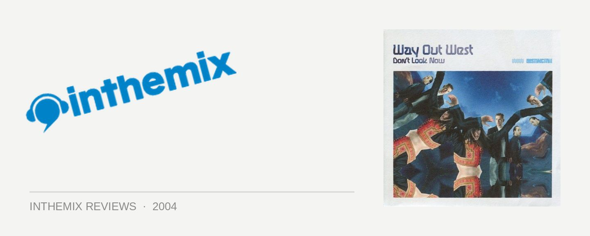

Way Out West - Don't Look Now
(Distinctive Records/Inertia)
In order for a DJ to have any sort of major impact these days, they also have to carve out for themselves a successful career as a producer. Together with his partner Jody Westanoff, progressive house maestro Nick Warren has certainly achieved this with Way Out West. Hailing from Bristol in the UK, they’ve been acclaimed as the ones to fill the void left by the break-up of Massive Attack. While they have their roots in the progressive house that Nick Warren has become famous for, the sound of Way Out West is more characterised by a rich atmosphere and textured ambience, the backing behind it as likely to be subdued breakbeats as it is a pumping 4/4 house rhythm. As recent visitors to our shores as part of the final Faithless tour, their new album Don’t Look Now has definitely been worth the two-year wait it has taken to get it into the record stores.
Some sparse old-school breakbeats open the CD, but before long they’ve glided smoothly into the typically lush Way Out West production style and emotionally charged vocals. This first song Anything But You introduces the listener to the outfit’s new resident diva Omi, and while she can’t quite match the irresistible strength of Kirsty Hawkshaw’s previous contributions to Way Out West, she takes a pretty damn good shot at it. She possesses a voice full of willowy and husky charm, and it is her soft sounds that lead along the first several relaxed minutes of Don’t Forget Me, before the song ascends into some slow breakbeats and a soothing backing of slide guitars and strings. This sets the tone, as the understated use of live instrumentation amongst the electronics can be heard right throughout the album: a reflection of Way Out West’s attempts to employ subtly while creating atmosphere, rather than clubbing us over the head with in-your-face nightclub aesthetics.
A general mood of exuberance is established early on in the album, a feeling that Way Out West fans will know only too well. Giving the vocal contributions a break for the moment, Everyday is among the more uplifting and peaktime tracks that the group have notoriously paraded in the past – think of a song like Activity and you’ll know they’re coming from. When writing music for the clubs they’ve often managed to evoke a truly sublime and epic presence in their sound, and Everyday makes for another great example of this. Continuing in this vein, Apollo is hypnotic progressive breakbeat at its very finest with plenty of dancefloor appeal, while Chasing Rainbows on the other hand is mega chilled ambient house that literally radiates lushness out of the speakers.
Richly textured with a blissful atmosphere, the production heard on the album is really something special: it shows a duo that really knows their way around the technology, but have strived to inject some emotion into the proceedings. Yet as Don’t Look Now meanders along it does lose momentum a little. A few of the vocal tracks veer dangerously close to becoming ballads and there is the occasional song that doesn’t really go anywhere, failing to wake from its ambient slumber. This is the punishment endured for the slight overuse of subtlety, and it means that Don’t Look Now is sometimes a tad too much of a “journey” for a casual listen. But a little bit of effort on the part of the listener pays off with absolute gems like Killa: lulling us into a false sense of security during the first several minutes of subdued quietness, the slow build of the song finally peaks with a pounding house beat that pulses alongside tribal chants and acidy synth lines.
In spite of any slight shortcomings in pacing, Don’t Look Now is an impressive and carefully considered effort from Way Out West - and in many different moments, it’s superbly beautiful. It’s clear they’ve attempted to transcend the nightclubs with their latest album, and hence to market it as merely dance music would be doing it somewhat of a disservice. With a formidable understanding of melody and song structure, they’ve dispelled all elements of coldness, soullessness and non-emotion - some of the unfortunate qualities that are sometimes present when a 12” makes the transition from the dancefloor to your home stereo. Because of this, Don’t Look Now is an album that can shoot for a wider audience, and is the sort of release that has the potential to convince disbelievers of the merits of electronic music. If Way Out West are indeed the ones to fill the gap left by the exit of Massive Attack, who knows - Don’t Look Now could become the album that finds a home on the coffee table of every inner-city hipster.